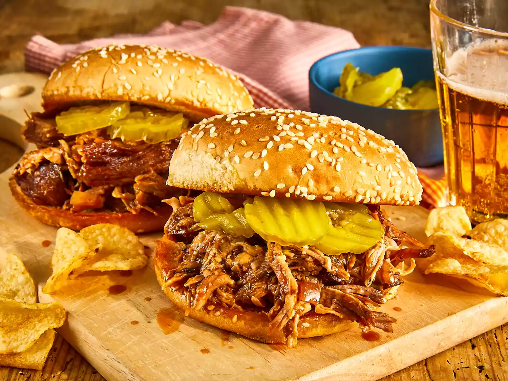

Home
Slow Cooker Texas Pulled Pork

Description
This Texas-style pulled pork recipe has a tangy
barbeque sauce that's easy to make in the slow
cooker. I like to serve the shredded pork on
toasted buttered rolls. My family's favorite!
Ingredients
- 1t vegetable oil
- 1c barbeque sauce
- ½c apple cider vinigar
- ½c chicken broth
- ¼c light brown sugar
- 1T prepared yellow mustard
- 1T Worcestershire sauce
- 1T chili powder
- 1 extra large onion, chopped
- 2 large cloves of garlic, crushed
- 1 ½ teaspoons dried thyme
- 8 hamburger buns, split
- 2T butter
Directions
- Gather the ingredients.
- Pour vegetable oil into the bottom of a slow cooker. Place pork roast into the slow cooker; pour in barbeque sauce, vinegar, and chicken broth. Stir in brown sugar, yellow mustard, Worcestershire sauce, chili powder, onion, garlic, and thyme. Cover and cook on Low for 10 to 12 hours or High for 5 to 6 hours until pork shreds easily with a fork.
- Remove pork from the slow cooker, and shred the meat using two forks. Return shredded pork to the slow cooker, and stir to combine with juices.
- Spread the inside of both halves of hamburger buns with butter. Toast buns, butter-side down, in a skillet over medium heat until golden brown. Spoon pulled pork into toasted buns.
- Serve and enjoy!